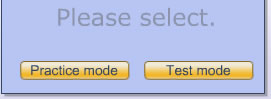
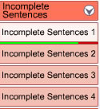
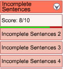
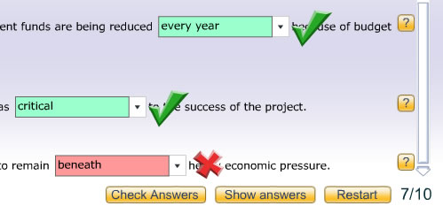

You can do each exercise in either Practice or Test Mode.
When you select an execise from the menu you will see this window:

Practice Mode
In Practice Mode:
Test Mode
In Test Mode:

Exercises done in Test Mode will be scored. The score is indicated by a green and red line under the exercise name in the menu. The green part of the line indicates the proportion of questions answered correctly. The red part of the line indicates the proportion of questions answered incorrectly. In this example the exercise 'Incomplete sentences 1' has been answered mostly correctly.Leave the mouse over the exercise title for a few seconds and the exact score will display.

Restarting the exercise or doing the same exercise again resets the score.
In Test Mode you are allocated a time to do the exercise. When the time has run out the exercise will finish and your score will be saved.
